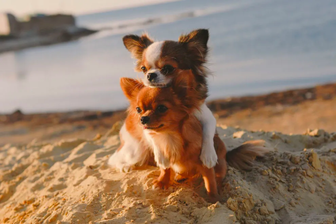
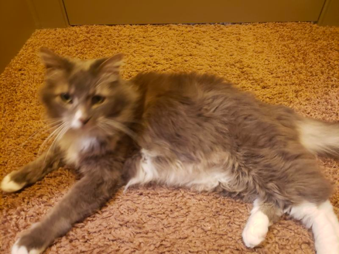
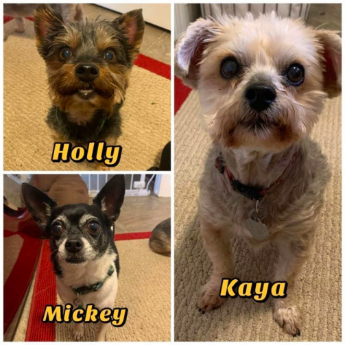

About us
The County of Los Angeles Department of Animal Care and Control is one of the largest and most progressive animal control agencies in the United States. DACC has adopted the philosophy of Socially Conscious Animal Sheltering at our seven animal care centers. We serve unincorporated Los Angeles County and 44 contract cities with a combined total population of over 3 million residents. We cover more than 3,400 square miles of cities, deserts, beaches, and mountains; from the Antelope Valley in the north to the Palos Verdes Peninsula in the south, as far east as the border of San Bernardino County, and west to Thousand Oaks. We provide animal control and rescue services in our service areas 24 hours a day, seven days a week.
Our animal care centers offer a wide variety of potential pets for you to choose. Most of our animals are either strays or pets turned in by owners who are no longer able to keep them. The many benefits of adopting from a County Animal Care Center include low‑cost spaying/neutering, a free veterinary checkup, the peace of mind knowing that your new pet has received its initial vaccinations against contagious diseases, and the satisfaction of having saved the life of a shelter animal. Besides patrolling busy streets, back roads, beaches, and canyons for lost, injured, and abandoned animals, our animal control officers also conduct humane investigations when animal cruelty is suspected, provide emergency rescues during natural disasters, enforce all State and local animal control laws, conduct animal licensing (canvassing) inspections; and inspect and license commercial animal facilities.
Facts about Pet Ownership in the U.S.:
| Methods | Dogs | Cats |
|---|---|---|
| Animal Shelter/Humane Society | 23% | 31% |
| Friends/Relatives | 20% | 28% |
| Breeder | 34% | 3% |
| Stray | 6% | 27% |
| Private Party | 12% | 6% |
| Other | 32% | 39% |
Happy Tails
Tell us the story of how you met your furry best friend and help other pet lovers discover the joys of pet adoption!
William & Sylvester
Adopted November 2020 || Maine Coon
Debra & Kaya, Holly & Mickey
Adopted December 2020 || Yorkshire Terrier / Chihuahua
